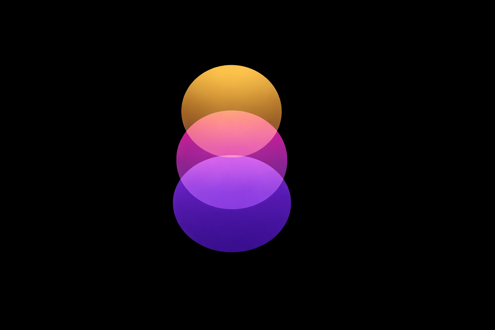

〜 人生というゲームを制する、最強の「思考OS」〜
毎日10分書くだけで、
思考が変わり、人生が動き出す。
くすぶりを感じているすべての会社員へ
正直に答えてほしい。
「毎日頑張っているのに、なんか前に進んでいる気がしない」
「モヤモヤはあるけど、何が問題かわからない」
「このままでいいのか、と感じながらも変えられない」
ひとつでも当てはまるなら、この資料はあなたのために作った。
人生はゲームだ。
だが多くの人は
ルールブックも攻略本も持たないまま、
ただ走り続けている。
ジャーナル（書く習慣）
難しいことは何もない。
ノートとペン、それだけだ。
「書く瞑想」という最強の武器
頭の中にある感情・思考・欲求を
そのまま紙に書き出す行為
日記とは違う。
きれいにまとめる必要はない。正しい文章も、論理的な構成も不要だ。
「脳の中にあるものを、外に出す」
——それだけでいい。
これを「書く瞑想」と呼ぶ。
「気持ちを書いたくらいで変わらない」——そう思っているなら、読み進めろ。
これは根性論でも精神論でもない。
脳科学と心理学が証明した事実だ。
脳には膨大な情報を選別する「RAS」というフィルターが存在する。
「重要」とマークした情報は、自動的に拾い始める。
ジャーナルに目標を書く＝脳に「これを検索し続けろ」というオーダー
→ 見えなかったチャンスが突然「見え始める」
あなたの鼻は、常に視界の下部に映っている。でも普段は意識されない。
脳が「不要」と判定し、見えているのに見えない状態にしているのだ。
書くことで意識が向き、スコトーマが外れる。
目の前にあったのに見えていなかった答えが、突然姿を現す。
BEFORE — 感情支配
「怒り」「不安」「焦り」
→ 扁桃体が暴走
→ 判断力が落ちる
AFTER — 書いた後
感情を言語化
→ 扁桃体が鎮まる
→ 前頭前野が活性化
さらに感謝・理想を書く時、セロトニン・ドーパミン・オキシトシンが分泌される。書くだけで、化学的に気分が上がる。
テキサス大学の社会心理学者が30年以上研究。感情的な出来事を20分×3日書いたグループに：
「書く」行為が、メンタルだけでなく身体的な健康にまで影響を与えることが証明されている。
未完了のタスクや気がかりなことは記憶に残り続ける。
「あれもやらなきゃ」——これがエネルギーを奪い、集中を妨げている。
ノートに書き出すと、脳は
「外部に保存された」と認識し、頭から解放する。
→ 約9分早く入眠できる研究結果あり
ジャーナルは
「脳のOSアップデート」だ。
新しいソフトを入れるより、
OSを更新した方が全部速くなる。
RICHARD BRANSON
ヴァージングループ創業者
「ノートを持ち歩かない日はない」。ヴァージングループの事業の多くはそのノートから生まれた。
OPRAH WINFREY
メディア実業家
「感謝ジャーナル」を30年以上継続。毎晩5つの感謝を書くことがポジティブマインドの基盤だと公言。
孫 正義
ソフトバンクグループ創業者
若い頃から毎日の目標・計画をノートに記録。思考の整理と将来のビジョン明確化に活用してきた。
SAM ALTMAN
OpenAI CEO
世界最高レベルのAIを作った人物でさえ、深い思考には紙を使うと明言している。
彼らは「才能があったから成功した」のではない。
「書く習慣」を通じて思考を整理し、
方向を定め、行動し続けたから成功した。
「あの上司のせいでやる気が出ない」
「環境が悪いから結果が出ない」
「もう少し条件が整ったら動く」
他責思考の本質は「自分の願望が不明確なまま、他人の価値観に操作されている状態」だ。
コントローラーを他人に渡したまま、自分の方向に進まないと嘆いているようなものだ。
自責とは、自分を責めることではない。
「自分が選択の主体である」と認識することだ。
「なぜうまくいかないのか」
→ 「どうすれば変えられるか」
この思考の転換こそが、人生を変える最初のステップ。
ジャーナルは、この切り替えを毎日ONにし続けるツールだ。
朝、コーヒーを淹れながらノートを開く。
もうそれが習慣になっていて、書かないと逆に気持ち悪い。
ページには昨日の自分の本音、今日やるべき一手、理想の未来が並んでいる。
職場で「なんかあいつ最近違うな」
と思われ始めている。
自分の価値観が明確になっている。
何に時間を使い、何を断るべきかが迷わずわかる。
収入・体・人間関係——3つが同時に動き始めている。
「あの時ノートを開いた一行が、
ここにつながっていたのか」
これは理想論ではない。ジャーナルを実践した人間が共通して辿る「変化のパターン」だ。

成功者が持つ願望には、3つの層が重なっている。
この3つがバラバラだと、どんなに「頑張ろう」と思っても3日で止まる。
自分は何を大切にして生きたいか？
これが行動の根っこになる。価値観が明確な人は、迷わない。
なぜそれを成し遂げたいのか？
親に楽をさせたい
子どもに背中を見せたい
自分を証明したい
「なぜ」が深いほど、目先の「楽さ」や「怖さ」に負けない行動力が生まれる。
具体的にどんな状態になっていたいか？
朝、好きな時間に起きて、好きな仕事をしている
副業の月収が30万を超え、家族に喜ばれている
体重75kg・体脂肪10%
3つが重なった時、
ブレない行動力が生まれる。
ジャーナルは、この3レイヤーを
日々確認・更新する場だ。
今日から使える「最強フォーマット」
スマホのメモは使わない。
理由は後述する。
1日を始める前に、思考と感情をセットアップする時間だ。
今この瞬間の気持ちを、正直に書き出す。
ネガティブな本音こそ、隠さず書け。
感情を言語化するだけで、扁桃体の活動が鎮まることが科学的に証明されている。
昨日やったことを、小さなことも含めて書き出す。
完璧でなくていい。
これが「自信の積み立て貯金」になる。
日々の小さな承認が、やがて揺るぎない自己肯定感になる。
「なりたい自分」を、すでにそうなっているかのように書く。
「俺は毎朝5時に起き、筋トレと読書で1日をスタートしている」
「副業の月収が30万を超え、妻に喜ばれている」
きれいに書こうとしなくていい。これは「見栄えの作業」ではなく「思考のピントを合わせる作業」だ。
朝が「1日のセットアップ」なら、夜は「1日のリセット」だ。
「昼休みに15分だけ副業のリサーチができた」
「上司に反論できた」「プロテインを飲み忘れなかった」
どんなに小さくていい。
「今日も前進した」という感覚の積み上げが、
長期的な自己効力感を作る。
明日やるべきことを1つだけ書いて、頭から降ろす。
ツァイガルニク効果により、未完了タスクは眠っている間も脳を占領し続ける。
紙に書き出すことで「外部に保存済み」と認識され、約9分早く眠れる。
64件のRCTメタ分析でポジティブ感情の増加・不安の減少が確認。
感謝を言語化した瞬間、脳内でセロトニンが分泌される。
1分で、化学的に気分が上がる。
行動がズレていないかを確認する、人生のPDCAだ。
週1回でもいい。定期的に回すことで、戦略が精度を上げ続ける。
STEP 1｜願望明確化
「俺は本当はどうなりたいのか？」
3レイヤーで深掘りする
STEP 2｜現状把握
「そのために今、何をしているか？」
正直に。言い訳なしで。
STEP 3｜一致評価
「その行動は、目標に本当につながっているか？」
ズレに気づくだけで変わる
STEP 4｜ネクストアクション
「変えられる一手は何か？」
小さくていい。1つだけ決める。
このサイクルを回し続ける人間が、5年後に「別人」になっている。
悪習慣も、ジャーナルで見直せる。
まず「トリガー記録」から始めよう。
スマホをいじりたくなった瞬間に、ノートに書く。
「19時、仕事が終わった直後。なんとなく手が伸びた」
「不安な気持ちの時に、現実逃避でSNSを開いた」
パターンが見えると、対策が打てる。
感情で動くのではなく、設計で動く。それが習慣化の核心だ。
研究が証明する手書きの圧倒的優位性
スマホを開いた瞬間、集中は終わる。
通知、SNS、ニュース——これらはすべて「あなたの注意を奪う」ように設計されている。
何兆円もの投資と数千人の天才エンジニアが
作り上げたシステムに、
意志の力で勝とうとするな。
戦略的に「戦場から離れる」のが正解だ。
手書きの時
タイピングの時
手書きで学んだグループはタイピングより早く・確実に記憶に定着した。（ノルウェー科学技術大学等の研究）
「紙とペン」は非効率ではない。
脳科学が証明した
最強の思考ツールだ。
「続かない」を仕組みで解決する
「続かない」のは
意志が弱いからではない。
設計が間違っているだけだ。
「1日1行、眠くても『眠い』とだけ書けばOK」
完璧主義は最大の敵だ。
「今日は10分書けなかった」→「もういいや」——このループが習慣を殺す。
地面スレスレのハードルは、「失敗」が物理的に不可能な高さだ。
脳が「これは自分にできること」と認識し始める。
1日サボっても、自分を責めるな。
ただし、翌日は必ず戻ってくる。
ゲームのように「ロードして再開」すればいい。
習慣化において最も重要なスキルは「再開する力」だ。
「コーヒーを淹れたら → ノートを開く」
「寝る前の歯磨きが終わったら → 明日の最優先事項を書く」
新しい習慣を「ゼロから作る」より、
すでにある行動に「くっつける」方が10倍続く。
毎日ノートの端に「本日の達成度：★★★☆☆」などとつけてみる。
点数をつけることで、ゲームのスコア管理のように客観視できる。
進捗が見えると、続けること自体が楽しくなる。
毎朝3つのことを書く習慣に挑戦する。
これだけで、脳のOSは更新され始める。
セルフカウンセリング4STEPを週1回実施する。
これを4週間続けた人間は、確実に「別人の思考」を持ち始めている。
人生を大きく変えるのは、
ドラマチックな一発逆転ではない。
毎日の「1行の積み立て貯金」だ。
「難しくない。やるかやらないか、それだけだ。
さあ、ノートを開け。
お前の人生の続きを書き始めろ。」
Q. 書く内容がわからない時はどうする？
A. 「書く内容がわからない」とそのまま書け。その一文が、今日のジャーナルだ。
Q. 毎日必ず書かないといけないか？
A. 必ずではない。ただし、2日連続で空白にするな。翌日は必ず戻ってこい。
Q. 書いたものは読み返すべきか？
A. 義務ではないが、月に一度振り返ると「自分の成長」が見える。モチベーションになる。
Q. ネガティブなことを書いていいか？
A. むしろ積極的に書け。本音を書かないジャーナルは、脳の深い部分に届かない。
Q. どんなノートが良いか？
A. 最初は100円で十分。続いてきたら、少し良いノートに変えろ。それがモチベーションになる。
Q. どのくらいで変化を感じられるか？
A. 2週間で「思考の整理がうまくなった」、1ヶ月で「行動が変わった」と気づく人が多い。
Q. 朝と夜、どちらが効果的か？
A. 目的が違う。朝は「1日の方向設定」、夜は「脳のリセットと睡眠準備」。まずは朝から始めろ。
Q. 思考が広がりすぎて止まらない時は？
A. タイマーを5分にセットして書く。時間制限が集中力を生む。
ジャーナルプロンプト集